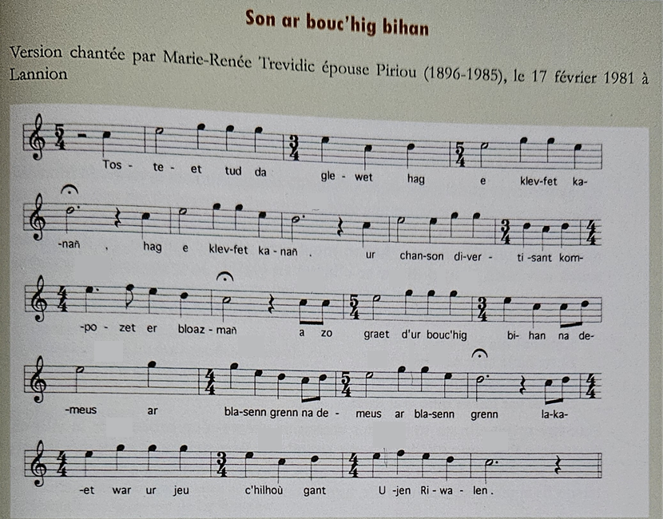
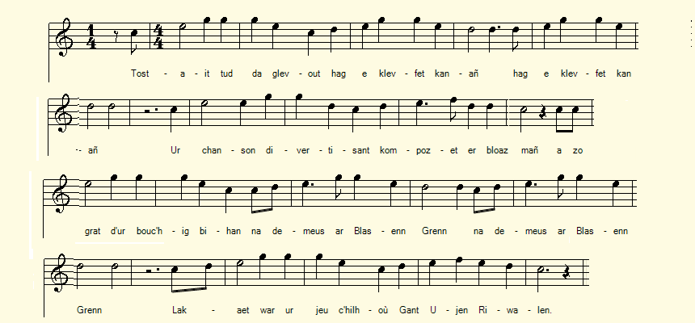
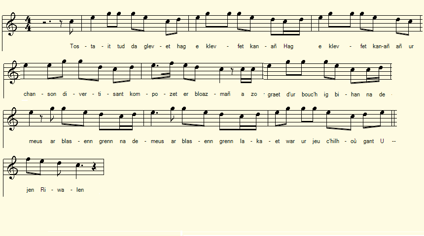
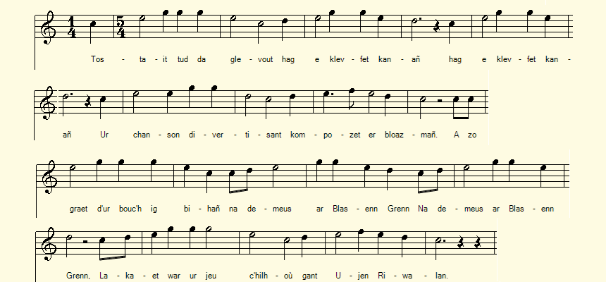

Son ar Bouc'hig bihan hag ar jeu c'hilhioù
Chanson du petit chevreau et du jeu de quilles
Remarque les mélodies du Bazhaz-BBreizh
Chant recueilli et étudié par le Pr. Daniel Giraudon
Publiée dans "Kaier ar Poher" en octobre 2025
"Ar Bouc'hig" chantée par Marie-Renée Piriou née Trévidig (1896-1985),
enregistrée par le collecteur, le 17 février 1981 à Lannion
Chant recueilli et étudié par le Pr. Daniel Giraudon
Publiée dans "Kaier ar Poher" en octobre 2025
"Ar Bouc'hig" chantée par Marie-Renée Piriou née Trévidig (1896-1985),
enregistrée par le collecteur, le 17 février 1981 à Lannion

Transcription musicale: Bernard Lasbleiz
|
Comme on le sait, le philologue
Francis Gourvil
avait, dans sa thèse publiée en 1960, examiné les chants du Barzhaz de façon très critique et il concluait que les principaux d'entre eux étaient des
inventions de La Villemarqué
. Ce faisant, il reprenait à son compte une accusation répandue parmi les commentateurs depuis qu'avait éclaté en 1867 ce qu'on est convenu d'appeler la "Querelle du Barzhaz Breizh". Gourvil se distingue cependant des autres détracteurs du Barde de Nizon, en ce qu'il étend ce grief aux
mélodies
elles-mêmes. Il consacre 14 pages (pp. 509 à 522) de son volumineux ouvrage "La Villemarqué et le Barzhaz-Breizh" aux "Airs du Barzhaz Breizh".
- la mélodie de l' "Hollaika" se trouve dans un ouvrage, "Grammatica celtica", publié à Prague par un émigré breton en 1800. - Les "Kanaouennoù santel" de l'abbé Henry parues en 1842 contiennent 10 mélodies que l'on retrouve dans le Barzhaz de 1839 (et une dans celui de 1845). Tout en reconnaissant que Kervarker et l'abbé Henry ne se sont connus qu'à partir de 1840, il estime que la coexistence de certains airs dans les quelques chants historiques du Barzhaz de 1839 et dans les couplets pieux publiés en 1840 ne prouve pas l'authenticité de chants historiques ou mythologiques, tels que "Gwenc'hlan" et l'"Enfant supposé" , dont les mélodies sont citées par l'abbé Henry! D'ailleurs, en 1868, La Villemarqué avait envoyé au recteur de Saint-Laurent les paroles et la musique d'un cantique à la Vierge de sa composition . Que Quellien ait recueilli le même air à Pommerit-Jaudy n'ébranle en rien les convictions de Gourvil! ********* On peut penser que les airs du Barzhaz sont tous des airs entendus par le collecteur, mais qu'il a parfois interverti les textes qui les accompagnaient. Le fait qu'il n'ait pas eu les connaissances en solfège suffisantes pour noter les airs entendus est également une importante source d'incertitude. J'en ai eu la démonstration en octobre 2025, date à laquelle le professeur Daniel Giraudon a fait paraître dans la revue de Carhaix, "Kaier ar Poher" , une étude sur une chanson ("son") dont l'un des co-auteurs est mort en 1925: "Son ar boc'hig bihan hag ar jeu c'hilhoù", "La chanson du petit chevreau et du jeu de quilles" . La chanson détaille le testament drolatique du malheureux chevreau devenu l'enjeu d'une partie de quilles. L'article est assorti d'une partition établie par le musicologue Bernard Lasbleiz . 23 mesures avec 12 changements de cadence (3/4, 4/4, 5/4), soit, pratiquement un changement toutes les 2 mesures! A l'oreille on a l'impression que le rythme principal est soit celui d'un air à 4 temps (4/4), soit celui des pas longs d'une sardane (2/4), soit un rythme impair (5/4) (cf. partitions et fichiers mp3 ci-après: On a tenté d'éliminer les ruptures de cadence, mais aucun de ces essais n'est vraiment satisfaisant!) J'ai fait part de mes remarques à l'auteur en joignant un fichier sonore présentant la version 4/4 harmonisée ci-dessous. Daniel Giraudon m'a aussitôt répondu en joignant à son tour le précieux enregistrement: "Ar Bouc'hig" chanté par Marie-Renée Piriou née Trévidig (1896-1985), enregistrement réalisé par le collecteur, le 17 février 1981 à Lannion. Il apparaît que la transcription de M. Lasbleiz reproduit à la perfection le chant de cette dame, âgée de 85 ans. Le chant archétypal imaginé par le compositeur anonyme comporte peut-être un ou plusieurs des changements de rythmes marqués par la chanteuse... On peut imaginer que La Villemarqué qui ne disposait, ni d'un magnétophone, ni des connaissances en solfège de M. Lasbleiz, n'ait pas restitué fidèlement ce qu'il avait entendu à la personne chargée de la partie musicale du Barzhaz. Ce qui expliquerait que certains airs passent pour inconnus. Ce qui n'exclut pas que certains chants n'aient réellement été notés que par le seul Villémarqué. |
As is well known, the philologist
Francis Gourvil
, in his thesis published in 1960, critically examined the songs of the Barzhaz and concluded that the main ones were
inventions of La Villemarqué
. In doing so, he took up an accusation that had been widespread among commentators since the outbreak in 1867 of what has become known as the "Quarrel over Barzhaz-Breizh." Gourvil, however, differs from other detractors of Nizon's Bard in that he extends this grievance to the
melodies
themselves. He devotes 14 pages (pp. 509-522) of his voluminous work "La Villemarqué and Barzhaz-Breizh" to the "Airs du Barzhaz-Breizh."
- the melody of "Hollaika" is found in a work, "Grammatica celtica," published in Prague by a Breton émigré in 1800. - The "Kanaouennoù santel" by Abbé Henry, published in 1842, contains 10 melodies that can be found in the Barzhaz of 1839 (and one in the 1845 release). While acknowledging that Kervarker and Abbé Henry only knew each other from 1840 onwards, he does not infer from the presence of certain tunes in both the few historical songs of the 1839 Barzhaz and in the pious verses published in 1840, that historical or mythological songs like "Gwenc'hlan" and "The Changeling" , whose melodies are cited by Abbé Henry, actually existed! Moreover, in 1868, La Villemarqué had sent the rector of Saint-Laurent the words and music of a hymn to the Virgin that he had composed. That Quellien collected the same tune from Pommerit-Jaudy in no way shakes Gourvil's convictions. ********* It is likely that the tunes in Barzhaz are all tunes heard by the collector, but that he sometimes interchanged the accompanying texts. The fact that he did not have sufficient knowledge of music theory to write down the tunes he heard is also a significant source of uncertainty. I had a demonstration of this in October 2025, when Professor Daniel Giraudon published in the Carhaix journal, "Kaier ar Poher" , a study of a song ("son") one of whose co-authors died in 1925: "Son ar boc'hig bihan hag ar jeu c'hilhoù", "The song of the little kid and the game of skittles" . The song details the comical testament of the unfortunate kid who becomes the prize in a game of skittles. The article is accompanied by a score prepared by musicologist Bernard Lasbleiz . 23 bars with 12 cadence changes (3/4, 4/4, 5/4), or practically one change every 2 bars! To the ear, one has the impression that the main rhythm is either that of a four beat air (4/4), or that of the long steps of a sardana (2/4), or an odd rhythm (5/4) (See below record and sound files: We tried to eliminate the breaks in rhythm, but none of these attempts is indisputable!). I shared my comments with the author, attaching a sound file featuring the harmonized 4/4 version. Daniel Giraudon immediately responded, attaching the precious recording: "Ar Bouc'hig" sung by Marie-Renée Piriou née Trévidig (1896-1985), recorded by the collector on February 17, 1981, in Lannion. It appears that Mr. Lasbleiz's transcription perfectly reproduces the singing of this 85-year-old woman. The original song imagined by the anonymous composer very likely includes some of the rhythm changes marked by the singer... One can imagine that La Villemarqué, who had neither a tape recorder nor Mr. Lasbleiz's knowledge of music theory, did not faithfully reproduce what he had heard to the person responsible for the musical part of Barzhaz. This would explain why some tunes are considered unknown. This does not exclude the possibility that some songs were actually recorded only by Villémarqué. |
Essais d'interprétation de la version chantée en 1981
|
Interprétation cadence 4/4  |
Interprétation cadence 2/4  |
Interprétation Cadence impaire (5/4)  |